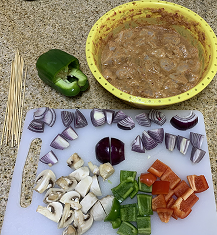
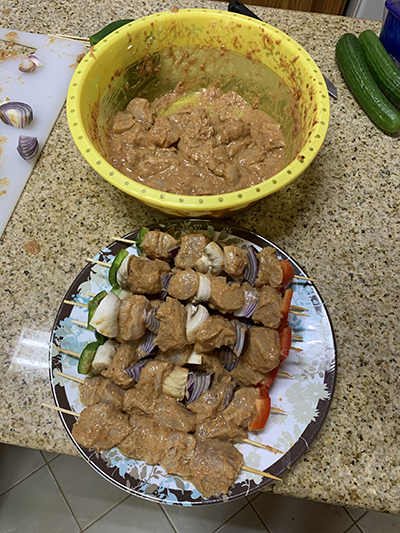

Ingredients

- Seasoning:
- One large tablespoon of:
- Olive oil
- Pomegranate molasses
- Tomato paste
- Sriracha sauce
- One small tablespoon of (variety of spices, can adjust to taste):
- Ground black pepper
- Ground red chilli
- Garlic powder
- Paprika
- Coriander powder
- Salt
- Ground onion
- Six chicken breasts
- One large onion (sliced)
- Green bellpepper (sliced)
- Fresh mushroom (sliced in halves)
- Wooden Skewers
Preparation

- Slice chicken breasts into cubes and place in bowl.
- Mix seasoning ingredients well, and use to season the prepared chicken breast cubes.
- Cover the bowl with nylon or aluminum foil, and place in refrigerator for 6 hours.
- Remove bowl from fridge, and start skewering ingredients in the following order:
- Chicken cube
- Sliced mushroom
- Chicken cube
- Sliced onion
- Repeat
- Fry the prepared skewers in cooking oil on a frying pan over medium heat until the chicken is thoroughly cooked to a golden-brown colour.
- Your shish tawook is ready to serve, optionally with rice!
 Oven-baked pasta
Shish tawook
Garlic bread
Oven-baked pasta
Shish tawook
Garlic bread